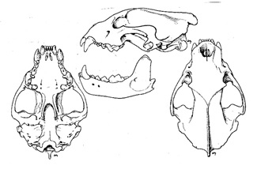
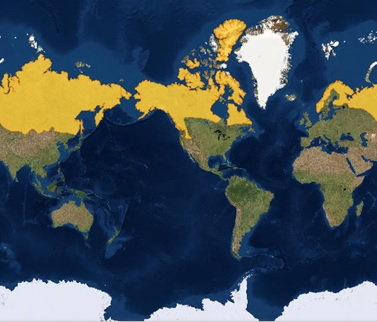
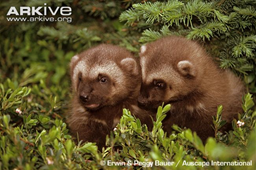
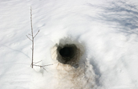
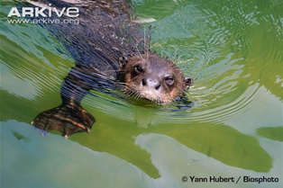
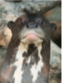
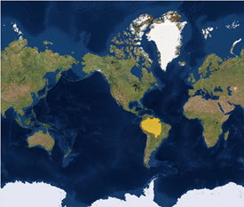
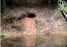

Wolverines

Wolverine, Igor Shpilenok, www.arkive.org
Life history
The wolverine is the largest still extant terrestrial member of the family Mustelidae living in North America. Their fossil records are not well documented due to earliest known mustelids from the Late Eocene era being very small and forest dwelling [24]. The number of wolverine species has been reduced significantly in the 20th century United States and during the 19th century, they disappeared from the south most regions in Europe due to persecution, deforestation and human development. Extensive human activities pressure the wolverine populations and habitat. Hunting, trapping and predator poisoning programs as well as resource extraction caused wolverine populations to decrease in eastern and south-west portions of their distributions in North America since the early 1900s [13].
Physiology
Wolverine skull, Gulo gulo, Hall and Kelson 1959
The body proportions and features of wolverines are bear-like, and they are the heaviest, most heavy built and powerful terrestrial mustelids [24]. Male wolverines can weigh as much as 32 pounds (14.6kg), and females can weigh up to 22 pounds (9.9kg) [38]. Wolverines are characterized by their large dental structure and robust, broad skull. Their dentition is capable of crushing bones of frozen ungulate carcasses with carnassial teeth well suited for shearing [24]. The structure of the jaw provides huge crushing power making the wolverine a highly specialized carnivore. The upper third incisor is larger than the other similar to that of the brown bear and displacement of the middle two (2) incisors of the lower jaw allows for increased bite strength without the need for more space [24]. Geographic variation in skull morphology between different wolverine species is due to interactions of different genotypes and different environmental conditions [1].
Wolverines have big, and stocky limbs, and the forelimbs are specialized for digging, tearing and turning rocks, logs and carcasses. Each paw has five (5 ) toes with strong, curved and semi-retractile claws. The bottom of each paw provides a locomotory advantage with a heavily furred underside to make treading through soft and deep snow easier and more efficient [2]. Generally, the physical conditions of the wolverine is poorer in summer than it is in winter because they lack fat in the summer and the coat is shedding and unprimed. Thermal stress seems to play a great role in the well being of the species [30]. Individuals with larger energy reserves could have a better fasting endurance and higher survival than individuals with smaller fat reserves. The average fatness in males is 7.8 ± 3.5% (n=32) and in females is 6.5 ± 3.8% (n=23)[31].
Geographical Range
Extant species of wolverines across the world map, IUCN redlist, http://maps.iucnredlist.org/map.html?id=9561
Wolverines are distributed throughout the boreal zones, taiga and forest tundras of higher latitudes in North America and Eurasia. In Canada, wolverines are found in the boreal forests, from the east to west coast, and they inhabit the arctic archipelago of the northern hemisphere. They are currently rare in Quebec and Ontario, however they once inhabited most of the eastern Canada with the exceptions of Prince Edward Island, Nova Scotia, Newfoundland, New Brunswick, Gaspe Peninsula and Anticosti Island [1]. Wolverines are capable of travelling long distances during their daily hunt, with studies showing a 30 to 40 km search being normal [4]. Males tend to cover greater distances than females during hunting. Presently, the range of wolverines is distributed from Scandinavia through Russia and Siberia to Alaska, Canada and western lower states of the United States [1].
Natural Habitats and Reproduction
Wolverine Kits, Erwin and Peggy Bauer, www.Arkive.org
The wolverine is a nocturnal species with an average lifespan of approximately 4 to 6 years in the wild, the maximum recorded lifetime was 13 years [24]. This animal reaches sexual maturity by the age of 2.5 years [24]. Wolverines are solitary animals, males and females are only seen during breeding season with their mating behaviour being polygamous (having numerous mates) [38]. Females in the wild breed from May to August and carry the egg until winter. Female wolverines can breed as early as two (2) years old and give birth to litters of 1 to 5 young [24] [4]. They give birth to young with closed furred eyes, and the teeth have not erupted. The young are called “kits”, and they are born between February and April where they average to approximately 84 grams [24]. Kits are weaned at 7 to 8 weeks and later follow mother on foraging trips in April or May; their adult size is reached by early winter [4]. Wolverine young are raised exclusively by females, but males were found to visit female dens to search for females in estrus. Often times, the male will kill kits he did not sire because he wants to kill another male’s progeny, and increase the possibility that the female raises his kits successfully the next year due to her physiological condition through the early cessation of lactation being better. Female adults with dependent kits still breed when not raising kits [24] [4]. The natal dens of wolverines are snow tunnels up to 60 meters in length without bedding, however shallow indents in the deep soil provide for resting spots for these animals [4]. Dens are abandoned in late April or early May due to snowmelt and wooden dens are built in snow-free seasons [4].
Giant Otters
Giant Otter, James Brunker, www.arkive.org
Life history
In the early 1970s, Ecuador, Colombia, Venezuela, Bolivia and Brazil had huge hunting markets for pelt trade which was a threat for giant otters. When the International Trade Restriction was placed in 1975 on giant otters, economic benefits of giant otter hunting and commercial hunting was removed. Their current populations are affected by human settlement and destruction of their habitats, overfishing, contamination of aquatic ecosystems, domestic animal disease and mismanaged tourism [12]. These animals are diurnal and occupy open habitats with stable territories [12]. Their form of communication involves very vocal screams, and these are very social animals which are easily visible to their large size. As a result, during the years of pelt trade, their numbers decreased very rapidly [22][18]. Furthermore, one dominant pair of giant otter will produce young usually just once a year. The giant otter is currently listed as Critically Endangered by the IUCN Red list of Threatened Species and many conservation management strategies have been implemented to ensure their numbers are maintained [12]. The giant otter is vulnerable and subject to increasing threats from deforestation, and exploitation of natural resources such as gold and oil in the Amazon and other regions of South America [12]. Giant otters do not seem to gain many benefits from living in groups compared to other social carnivores such as wolves, hyaenas, lions, etc. Thus, over time these mustelids reduced the numbers of their groups and tended to conduct solitary hunting [27].
Physiology
Giant otter with webbed feet showing, Yann Hubert, www.arkive.org
Giant otters are also one of the largest mustelidae and its size is only rivaled by the sea otter, both of which can weigh the same as a wolverine [22]. Male giant otters weigh approximately 58 to 70 pounds (26-32kg) while females weigh 48 to 58 pounds (22-26kg). The length of both males and females are around 1.8 to 2.4 meters in length adding the tail [11]. They have a round flattened head with dark eyes, and their nose pad is hairy with two slits for nostrils [20] [33]. There are two flaps of skin which close the nostrils when they are diving [6]. They tend to have natural markings below their throats [11]. The head has numerous long, thick whiskers which a rich supply of nerve endings and they provide a great sense of touch as these animals dive to hunt [6] [11]. The teeth of the giant otter are very large, and the cheek muscles are significantly larger than other mustelidae [6] [24]. The molars are very wide, providing crushing and slicing capabilities. Incisors are small and used for delicate grooming [24] [6]. The forelegs are heavily muscled, and the forepaws have strong toes and claws with thickly webbed fingertips [6] [11]. The fur of these animals is very short, but there are two layers (guard hairs and under fur) which prevent the skin from getting wet [6] [11].
Geographical Range

Giant otters are endemic to South America, and they inhabit remote areas of the Amazon, Orinoco and La Plata River Basins. Its range has become discontinuous and fragmented as a result of local extinctions. These animals live in hydrographic networks along basins in South America, and their distributions in the northern hemisphere do not surpass northern Venezuela. The southern limits include Misiones in Argentina. A majority of giant otters are maintained in captivity, and there are very few regions where they inhabit a natural range [12].
Natural Habitats and Reproduction

Giant otters are known to inhabit large, slow-moving rivers, streams, lakes and swamps. They maintain and concentrate their preferred habitats and territories in small and stable areas year round in lakes [12]. These otters attain sexual maturity at the age of 2.5 years, however there is high cub mortality, making it difficult to establish new groups [12] [22]. A typical giant otter subpopulation includes a family of 2 to 15 individuals with sexually mature adults. There is a dominant breeding pair which gives birth once a year and non-breeding subadults and offspring [3]. Each group only produces a litter once a year with litters ranging from 1 to 6 young [22] [11]. Reproductive Success is related to group size and habitat quality with smaller groups having a lower reproductive success [11]. Captive otters are well studied, and wild giant otters have very little observable info on their reproductive cycles [22]. The captive giant otter preferences generally agree with the diets of wild giant otters. In captive giant otters, after parturition, adults continued to copulate repeated for approximately eight (8 )days. The mean gestation period was 70±2.1 days, and females gave birth to a new litter once older pups were 6 to 7 months old. The mean number of pups per litter was similar to that of wild giant otters. These captive species gave birth between August and September with pups emerging in October and November, which are the months of lowest water and fish concentrations, which makes it easier for the mother to catch fish for its young. Weaning off the pups began around 16 to 18 weeks, and pups began eating fish by 10 to 12 weeks of age [22] [11]. Giant otters build dens by digging holes in riverbanks with multiple entrances near the water or lake. After 65 days, pups walked out of the dens themselves. Normally, the female take the pups out to the water after 1 month to teach them to swim. Initially, she holds the pup in her mouth and eventually held the pup on her chest. Both males and females offered soft pieces of fish to pups at 1 to 2 weeks before they began to eat solid food [22]. During the first four (4) months, females remained with the pups a majority of the time and nursing as well as cleaning was done by the female herself. In this time, the male would protect the family by patrolling the territory while they slept and he seemed more alert and vocalized with greater frequency than the rest of the group. The male later offered food to pups starting at 10 weeks of age and they played with juveniles greater than three (3 )months old. Juveniles also handle and play with pups by imitating behaviours of the mother [22] [11].